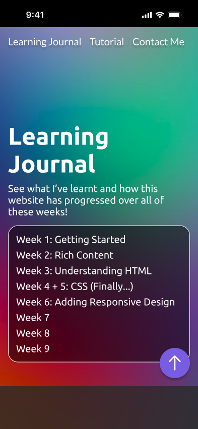

This week, we started the basic project structure of the website. I've never done HTML before,
so it was very weird at first understanding how to structure my project files but nevertheless
I got the project made and learnt about the very basics of web development.
Making the Web Pages
To get started, we were provided with a template HTML document to work with.
We were tasked with making 3 copies of this and naming them: index, contact and tutorial.
Each of these pages have different requirements that I need to implement.
I created my project locally in my IDE and decided to have the upload for when I was finished this week.
One requirement this week was to link all of these web pages together.
This is done via <a> elements, or anchor elements. Anchor elements take a href attribute that
tells web browser where to navigate to when the element is clicked. I initially wrote my elements as:
<a href=”/index.html”></a>
This worked perfectly locally as every webpage was beside each other in the directory.
However, when I uploaded these pages to Brighton Domains all the links broke.
This is because by adding the “/” to the start of the path, it pointed the browser to the root of the
website instead of the specific folder that I decided to store my project in. There was a very simple
fix for this. When removing the “/” it instructs to browser to locate a file with that name inside the
current directory, this would be the same as adding “./” to the start of the path.
Semantics
The most important thing I learnt this week was about semantics. I was loosely familiar with this
concept from my experience working with Apple Wallet, but I wasn't sure exactly what it meant. As it
turns out semantics are very useful! Semantics were introduced with HTML5 and provide a better
description of what element of each webpage does.
For example, there is the <header> element now. This tells the browser that this is the main
title area, the heading for the webpage. Previously we had to markup loads of <div> elements with
various CSS class attributes which weren't very clear. However, web browsers thankfully still
support older elements so that the treasure trove of existing web pages aren't lost to time. It also
reduced the accessibility of a webpage by making it harder for users to apply custom style sheets
that make webpages easier for them to use as the class attribute could be inconsistent from page to
page.
Accessibility
Speaking of accessibility, I never knew there were so many standards for the web. The W3C maintains
the primary set of standards for a webpage to abide by, to make web-based experiences rich, open and
accessible. These are known as the W3C standards.
Accessibility means a lot to many people, and I'm glad to see that there are various standards in
place to keep the web open and welcoming to everyone.
Additionally, the W3C provides a tool known as the W3C Markup
Validation Service that allows you to check if your website is W3C standards compliant. It is
something I will be using extensively during my projects development as I know it is important. Not
only for accessibility but also for CSS to function as expected.
Further Research
In previous projects I sometimes made changes to them that caused major components to break without
my knowledge and when I later went back to the system, I was unaware of the exact changes and so it
took quite some time to debug my problems and repair the system. I knew for this assessment that I
needed to change my workflow.
For this project I decided to integrate Git into my workflow.
Git is a version control system that allows you to take snapshots of your project so that you can
track, and rollback changes made to a project over time. It is used a lot in the industry and is also
very common amongst open-source developers. My IDE of choice for this project was WebStorm by IntelliJ which has very robust Git
integration alongside various automations that aid me in development. The initial commits of my
project were very messy as I was still trying to understand how to make a “good” commit but
eventually (after reinitialising the repository a lot) I made the repository clean, and I am now
keeping better track of my projects.
Additionally, I researched more into the capabilities of WebStorm. I found out that it has a built-in
SFTP client that allows me to interact with the web server and its contents without needing to leave
the IDE. It also has an automation that allows me to automatically upload the current commit of my
local repository to Brighton Domains without needing to log in or change the files directly. This has
already saved me a lot of time and means that I do not need to rely on a hosting service like GitHub
for storing my project.
To end off, I would like to keep a record of the visual progress of the website. Currently, all
webpages look nearly identical but over time as I learn CSS I hope for these pages to look amazing.
This week we learnt about how to use rich content to style our slight to make certain elements stand
out and add some visually appealing content including images and lists.
Navigation Menu
This week I added a navigation menu for the website which should suffice until I have finalised my
website’s design. To create a navigation element for the website I needed to use a <nav> element.
On top of meeting the criteria and needs of HTML5, the nav element is used by browsers to determine
if the navigation bar should be displayed at all or if the navigation elements should only be
provided on demand as described in the Mozilla web docs for the nav
element. This is done for users with various accessibility settings active so that their
accessibility software doesn’t unnecessarily read out navigation elements or focus the navigation
menu when there are better ways of accessing this content for users with different needs e.g. Rotor navigation.
For each entry I then added an anchor element, each one set with a unique id attribute. This id
attribute allows the HTML to uniquely identify an element and allows us to perform operations on it.
For example, we could style an element with a specific id or in my case we can reference the anchor
with another anchor via it's id like:
<a href=”#entry-week1”></a>
Where "entry-week1" is an id. The # symbol tells the browser to look for an element with that id on
the page and to navigate to it when the anchor is clicked. I have used this extensively in the new
navigation menu.
Currently, this navigation menu is built using the new list elements we learnt. <ul> and
<ul>. ul stands for unordered list. Meaning that each element inside the list has a standard
bullet point beside it as there is no important order. ol stands for ordered list. Each element will
have a number beside it, the number representing its position in the list. I have went with an
unordered list as I do not need numbers on top of the week numbers.
Rich Content
Whilst I have outlined the basics above there are better ways to display content in a more
visual/rich manner. This can be done by styling the text. This can be done via <strong> and
<em>. The strong element wraps around a piece of text and by default gives it a bold
appearance. The em element or the emphasis element also wraps around a piece of text and
by default gives it an italic appearance. However, you can style both elements if you wish
to change how this text is displayed. For example, Apple styles the strong element on their website
to make it multicoloured:
If you look in the inspector you can see that the word design is just a <strong>
element.
You can also embed images, which I have shown before via the snapshots.
These images are required to implement a “src” and “alt” attribute. The “src” attribute points to a
location of an image, this can either be hosted on the site itself or in an external url. The “alt”
attribute is used by assistive technologies to describe images even when the browser can’t load them
or if the user is using a screen reader.
To end off, I have changed the initial headings and added the navigation menu for each entry to the
learning journal. However, the rest of the pages remain unchanged. If you want to see what the site
looked like at week 2, I encourage you to look at the week 1 progress
snapshot.
This week we learnt how to make even richer content for our website and how to make browsers display
more information about our website in their UI with metadata.
Metadata
In the lecture we learnt about the <meta> element, specifically the viewport meta. Meta elements,
according to Mozilla, represents metadata information about a web page that cannot be displayed via
standard HTML elements e.g. the web page title displayed on this pages tab. The viewport meta element
allows the website to be displayed better on mobile because the width of the website is now laid out
based upon screen width which I have added this week. Additionally, we can set the title of a website
or images on it like the favicon (the small icon beside the title in the webpages tab). I have set
the title of all my pages but have omitted the favicon for now as I still need to make it.
Richer Content
We also learnt about more elements that are supposed to better structure our content. The first of
which is a description list. This list allows list elements to have a description attached to them. I
have used this later this week when I talk about the various websites used for design inspiration
for the final website.
Secondly, we have tables. A table can be very useful for structuring information that should be
compared or laid out in a structured way. We have been asked to add our timetables to our site. I
have added this to the “Contact Me” page in case you wish to see it. Currently, it doesn’t really look
like a table. There is no default styling for it so currently it looks very weird. I will fix this
when I implement CSS later. It took me longer than I would like to admit to understand how tables
work... I am much more familiar with Markdown tables, so I had to follow a guide from W3Schools.
The third element we learnt of was the <cite> element. This is designed for referencing or
citing a piece of work. By default, it displays its contents in italics. I currently have no use for
this element and so it has been omitted. Finally we learnt about the <figure> element. This
element is designed to be used with images, tables and other elements that would benefit from an
additional explanation with a caption. I have updated all the current images in the website to
adopt the figure element.
Interactive Content
We also learnt that we could turn images into links, this can be done by adding an <img> element
into a <a> element. This doesn’t style the image in any way, but it does make it interactive and
clickable. For example, clicking on the image of the university below will take you to the University
of Brighton website.
This way the links on a website don’t stick out like a sore thumb in that bright blue colour. We can
present them very nicely without having to first style them.
Further Research
So far, I have been haphazardly adding these elements to my website but given that next week we are
starting HTML I thought it would be best to start designing what the final website should look like.
To do this I am going to be using a UI design tool known as Figma
. Figma was designed for making interactive prototypes of systems very quickly and easily. I have
previous experience in using Figma from designing my own apps as well as creating concept designs for
the University’s own apps (only for fun I’m afraid).
I started off by researching two different styles of websites. An article-based website, like how the
learning journal should look, and a more media focused site similar to an online store. My main
references were:
Apple is a hardware and software company specialising in consumer hardware e.g. phones.
The Verge is an article-based website that heavily included whitespace around the main body of text.
It also had what looked like many asides for ads, promoting other articles, adding additional context
and more. I used this site as the basis for my own article style and… well… it doesn’t look quite right:
A screenshot of a design wireframe for the learning journal that resembles an article based
website.
The main header for the learning journal either didn’t take up enough space or took up too much. The
“Entries” aside navigation also didn’t feel right. The articles were weirdly cropped off by it and
the aside wasn’t fully utilised which made the overall layout feel awkward.
My second attempt involved referencing the websites for Procreate and Apple. These sites have more
emphasis on media like photos, videos and animations to engage the reader. So, I decided to take some
design cues from them and develop a design that looks more vibrant and colourful:
To end off, I would like to illustrate the difference that has been made just by adding the viewport
modifier. As you can see the text looks narrower to match the phone width, the reason this displays
small still is due to the size of the screenshots on the page. Hopefully with a bit of CSS next week
this can be fixed!
(Due to how closely linked these weeks are and how small week 5 is on it’s own, I have combined week
4 and 5 into one entry.)
At long last. We have reached CSS. These weeks we learnt the basics of CSS, how they know to style
elements and how we link the files themselves to HTML. Additionally, we learnt about using fonts from
Google Fonts and how we can now style text using CSS.
CSS File Format
Cascading Style Sheet files or just CSS files, are used to declare how specific elements should be
styled on a linked HTML document. They can style: HTML elements, elements with a specific class
applied, elements with a specific id or elements that are contained within other elements e.g. only
styling <a> elements that are contained within a <li> element.
They are specified in the following ways:
div - Styles all <div> elements on a webpage
.wrapper - Styles all elements with the wrapper class applied
#unique - Styles the element that has “unique” as it’s id
div p - Styles all <p> elements that are contained within a <div> element
no matter how nested they are
There are many other variations, but these are the main 4 that developers use. With this in mind we
can move onto the properties.
Properties
There are a ton of properties which you can find on the Mozilla Web Docs that can be used each
affecting the way an element is displayed. Properties are declared like so:
p {
color: blue;
font-size: 16px;
}
This would produce the following result:
However, we can also override styles or cascade them. If we were to declare these styles in the same
file:
p {
color: blue;
font-size: 16px;
}
p {
color: red;
font-size: 2.5em;
}
That would produce the following result:
The second group of properties that we used for <p> override those of the first since they
conflict. This is useful for accessibility as it means we can provide default styling that can be
overridden for different needs.
Also notice how we declared that the font size is 2.5em. What is an em? The em is a relative
unit
of measurement in CSS. This means that instead of setting a fixed size for the font we can size the font
relative to something else. With em it means we are calculating the font size based on the font size
of the current element. So, let’s say the current font size was 16px when we use 2.5em, we are asking
for the font size to be set to 2.5 x 16 which would be 40px. This is very good for responsive design
as we can assign a base font size for the document and have all other elements automatically adjust
their size accordingly.
Linking CSS
CSS has 3 ways of being implemented. You can implement it in the <head> of a HTML document via
the <style> element. You can also add CSS inline to an element using the style attribute which
all HTML elements have. Both methods are not recommended. Instead, it’s recommended to create a
separate CSS file that you can link inside the <head> using a <link> element like:
<link rel="stylesheet" href="styles.css">
This makes it easy to reuse styles. Additionally, it makes it possible to override styles stored in
another style sheet since the files also cascade each other. This is useful for normalizing the base
appearance of a website using something like normalise.css.
Google Fonts
A very common resource for development of all kinds is Google
Fonts. The font you use for a website or system helps define its personality and helps people
associate it with your brand. For example, think of Comic Sans which most people associate with
either Microsoft Word or Microsoft Paint.
Google Fonts contains many fonts which are all copyright free which makes them perfect to use in this
project. I was stuck between 3 main fonts:
Lato
Nunito
Ubuntu
Lato looked quite clean it looked like a standard font you would see in a lot of systems, but this
makes it appear more serious and I ended up not wanting to use it for that. Nunito has a much more
rounded look to it which makes it look very bubbly and fun but feels very childish which doesn’t
really fit for university work. Therefore, I ended up using Ubuntu as I really liked the curve all
the letters had whilst still having sharp edges. It’s a nice mix of Lato and Nunito so it’s a fun
font that still looks professional. (For those of you who couldn’t even tell I used different fonts I
am so sorry you had to read this)
To start using Ubuntu inside my CSS file I needed to add the following code to the top of the CSS file:
This tells the web browser to import the file add the specific URL. In this case, the font file
needed to display Ubuntu. I can then adjust my font by setting the font-family property on my elements:
font-family: 'Ubuntu', sans-serif;
And just like that, the website font is now Ubuntu. I opted to import the font in the CSS file
instead of the <head> like google suggested as it means that I don’t need to import the font each
time for each HTML file.
Further Research
So far I have showed having to manually adding each value that you want to set for every single
element. If you want to change the foreground colour of every element in a page, it’s easy to do the
first time as you need to write the CSS anyway. However, if you wanted to change this in the future
it would be very tedious. This is even harder to do if you maintain multiple CSS file like in a
larger website. This is what leads to some parts of a website looking older than others, it’s hard to
update the CSS values. An example of this is []. To fix this we have variables.
Variables are declared like any other property, usually in the root
pseudo-element like:
:root {
--accent-color: blue;
}
This creates the variable and makes it available to all other elements in the style sheet. We can
then use it by using:
strong {
color: var(--accent-color);
}
This means that now the strong element will be coloured blue, and if we ever want to update it in the
future, we can just change the variable value.
The benefit of this is that we can now easily maintain the website and keep it consistent across HTML
documents. It also means that when we need to adapt the website for different users, we can write
less code, and we only need to update the variables instead of cascading every element that needs
changed.
I have also designed a mobile version of the website:

Progress Snapshot
These weeks I added the basic styling for the website as well as changed how the navigation menu
looks. I have decided to adopt best practices and design the website to be mobile first. Meaning that
the design for the website is made with a phone in mind and will be later adapted to the desktop as
shown previously. I have also replaced instances of code in the journal with the <code> element
so that they are displayed better.